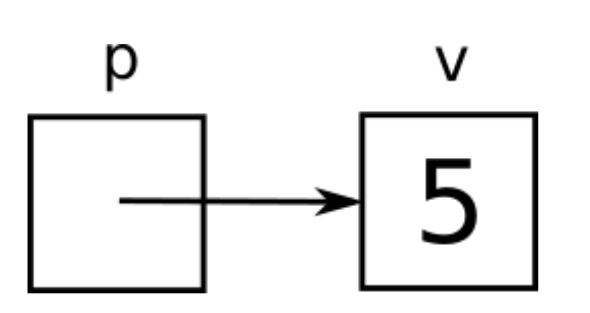

Lab 5 - Ponteiros e structs
Info
Por favor, façam esta atividade em dupla e lembrem das regras.
-
Os enunciados de programação dizem "o que" a função/programa deve fazer, mas não dizem "como" deve fazer. Não pergunte "como", pois descobrir isso é justamente uma das habilidades que vocês precisam exercitar para as três disciplinas.
-
Ao terminar um exercício de programação, chame um dos professores para testemunhar o programa funcionando e validar o código. Não avance no guia até fazer isso, para termos certeza que você está passando por todo o processo.
(se os professores estiverem muito sobrecarregados, você pode validar com um colega que já foi validado)
Introdução
Podemos dizer que praticamente todos os conceitos vistos até agora são adaptações de conceitos vistos anteriormente em Python e Java. Neste guia, finalmente exploramos alguns conceitos "exclusivos" de C e outras linguagens de baixo nível.
Para introduzir o primeiro deles, vamos começar com uma pergunta.
Exercise 1
Answer
Porque, sem &, estaríamos apenas passando uma cópia do valor de n para
scanf. Apenas com essa cópia de valor, scanf não tem como mudar o
conteúdo da variável n.
Endereços
Como vimos anteriormente, os conjuntos de variáveis de duas funções diferentes são totalmente separados. Ou seja, no exemplo abaixo,
void foo(int n) {
n++;
}
int bar() {
int n = 0;
foo(n);
return n;
}
a função bar devolve 0, pois a variável n de foo é diferente da variável
n de bar, apesar das duas terem o mesmo nome.
Cabe enfatizar que é bom que esse seja o comportamento padrão! Geralmente queremos evitar situações nas quais uma função altera variáveis de outra função. Essas situações são conhecidas como efeitos colaterais e costumam ser indesejadas por tornarem o código mais imprevisível, aumentarem a probabilidade de bugs e dificultarem testes.
No entanto, se soubermos muito bem o que estamos fazendo, efeitos colaterais
podem ser úteis. O scanf é o exemplo óbvio disso! Então vamos mostrar como
permiti-los.
O problema do exemplo anterior é que o nome de uma variável é um identificador local, ou seja, vale apenas dentro do escopo da função na qual a variável foi declarada. Mas a variável também possui um identificador global que é seu endereço. Se uma função sabe o endereço de uma variável, essa variável pode ser modificada pela função mesmo se não foi declarada dentro dela.
Para entender melhor o conceito de endereço, basta pensar na memória como um "vetorzão" e na variável como um elemento desse "vetorzão". O endereço, nessa analogia, seria o índice desse elemento.
E como obtemos o endereço de uma variável? Basta usar o operador unário &.
Isso explica o que acontece em relação ao scanf: o que a função recebe não é o
valor de uma variável, e sim seu endereço. Assim, ganha o poder de escrever nela
o valor digitado pelo usuário. Então lembre-se: sempre que encontrar o símbolo
&, leia como se ele fosse a expressão "endereço de".
&a // lê-se "endereço de a"
&b // lê-se "endereço de b"
&abobrinha // lê-se "endereço de abobrinha"
Mas para podermos passar endereços para lá e para cá, precisamos de variáveis
especiais que guardam endereços. Essas variáveis são conhecidas como
apontadores ou ponteiros (pointers em inglês) e indicadas pelo símbolo
*. Antes de dar mais detalhes, vamos dar uma dica simples e valiosa em relação
a esse símbolo.
A Regra de Ouro
Dizemos que um apontador p aponta para uma variável v se o endereço de v
está armazenado em p. Visualmente, podemos representar isso da seguinte forma:

Esta figura é uma representação visual de p apontar para v. Nesse caso, v é uma variável
inteira cujo valor é 5 e p é um apontador cujo valor é o endereço de
v. Acostume-se com essa representação visual, aliás, pois ela será muito usada em
Desafios de Programação!
Mas o que realmente queremos enfatizar aqui é que, a partir dessa terminologia,
podemos derivar uma pequena regra que ajuda muito a compreender códigos que usam
* no contexto de endereços e apontadores: sempre que encontrar o símbolo
*, leia como se ele fosse a expressão "variável apontada por".
Sem contexto essa regra parece estranha, então vamos aos exemplos!
Apontadores
Vamos declarar o apontador p do exemplo acima.
int *p;
Por que estamos usando int? Porque apontadores em C podem saber o tipo da variável
para a qual apontam. Portanto, esse tipo deve estar na declaração. Assim, a
combinação de int seguido por * representa a declaração de um apontador para
variável inteira.
Difícil lembrar? Então note que essa sintaxe é totalmente coerente com a regra
de ouro! A declaração int v significa "v é inteira", enquanto a declaração
int *p significa "variável apontada por p é inteira".
Vamos agora armazenar o endereço de v em p, reproduzindo a situação da
figura.
int v;
int *p;
v = 5;
p = &v;
Esse código faz sentido para você? Vejamos se você está entendendo...
Exercise 2
Answer
5 é um valor, não uma variável. Não faz sentido pedir "endereço de 5".
Exercise 3
Answer
v guarda inteiros, então não podemos usá-la para guardar endereços
Exercise 4
Answer
v guarda inteiros, então não podemos usá-la para guardar endereços
Exercise 5
Answer
p guarda endereços, então não podemos usá-la para guardar inteiros
Exercise 6
Answer
5 é um valor, não uma variável. Não faz sentido pedir "endereço de 5".
Exercise 7
Answer
p guarda endereços, então não podemos usá-la para guardar inteiros
Agora vejam como o exemplo abaixo é interessante.
int v;
int *p;
v = 5;
p = &v;
*p = 10;
printf("%d", v);
Exercise 8
Answer
A saída é 10, pois a linha *p = 10, pela regra de ouro, pode ser lida como
"variável apontada por p recebe 10". E qual é a variável apontada por p?
De fato, podemos usar *p como sinônimo de v ao longo do código.
int v;
int *p;
v = 5;
p = &v;
printf("%d", *p);
Obviamente, esse uso só é válido a partir do momento em que p recebe o
endereço de v. Antes de receber a primeira atribuição, p guarda lixo de
memória, como qualquer variável.
A Única Exceção
A única exceção à regra de ouro é a situação na qual o apontador é inicializado na declaração.
int v = 5;
int *p = &v;
Nesse caso, a regra é coerente com a declaração, mas não é coerente com a
atribuição. Quem recebe o endereço de v é p e não a variável apontada por
p. Aliás, nesse momento, nem existe uma variável apontada por p, já que p
está com lixo de memória.
Mas essa é a única exceção com a qual você precisa se preocupar!
Aplicação de Apontadores
Uma aplicação comum de apontadores é seu uso para contornar o fato de que o
return de uma função devolve um único valor. Considere a função abaixo, que
calcula ao mesmo tempo a soma e a subtração de dois inteiros. Essa função está
errada, pois o return de dois valores separados por vírgula é permitido em
Python mas não em C. Apenas um valor pode ser devolvido em C.
int sum_sub(int a, int b) {
int sum = a + b;
int sub = a - b;
return sum, sub; // oops...
}
Para contornar isso, podemos fazer uma função que não devolve nada, ou seja é do
tipo void, mas escreve a resposta em duas variáveis cujos endereços são
recebidos como parâmetros.
void sum_sub(int a, int b, int *psum, int *psub) {
*psum = a + b;
*psub = a - b;
}
Entender o uso dos símbolos * acima não deveria ser um problema se você
absorveu bem a regra de ouro!
Warning
Sim, é feio. Muito feio. Mas funciona.
Repare que chamamos os parâmetros de psum e psub em vez de sum e sub.
Não faria sentido chamar de sum e sub, pois eles não armazenam os resultados
em si e sim os endereços das variáveis onde eles devem ser armazenados.
Exercise 9
Exercise 10
Warning
Não continue antes de validar suas respostas com um dos professores ou um colega validado.
Endereços e apontadores são considerados conceitos particularmente difíceis de entender para quem está aprendendo C pela primeira vez. Mantenha sempre a regra de ouro em mente para auxiliar nesse processo.
Structs
Outro conceito introduzido neste guia é o de struct. Trata-se de um recurso
que responde a uma das dúvidas mais antigas da humanidade: como podemos
armazenar múltiplos valores em uma única variável?
(meu conhecimento de história talvez seja um pouco questionável)
Structs são tipos compostos que armazenam múltiplos valores. Para vocês que já aprenderam orientação a objetos, pode-se dizer que eles são mais ou menos como "objetos sem métodos, apenas atributos".
Suponha por exemplo que, para um programa de geometria analítica, queremos definir um tipo que representa um ponto do plano cartesiano e, portanto, possui dois valores: a coordenada horizontal e a coordenada vertical. Declarar um struct que representa esse tipo é mais ou menos simples.
struct ponto {
int x;
int y;
};
Dizemos "mais ou menos" por causa de dois detalhes chatos: o primeiro é esse
maldito ponto e vírgula no final, que você com certeza vai esquecer em vários
momentos da vida. O segundo é o fato de que essa declaração não cria um tipo
chamado ponto, mas sim um tipo chamado struct ponto. Ou seja, para declarar
uma variável desse tipo novo precisamos escrever
struct ponto p;
o que é um tanto quanto verborrágico.
Contra o primeiro detalhe não podemos fazer muita coisa, mas contra o segundo
existe um recurso muito útil em C que é o typedef. Esse recurso nos permite
criar "apelidos" para tipos. Assim, podemos reescrever a declaração do struct da
seguinte forma
typedef struct {
int x;
int y;
} ponto;
que significa "struct anônimo com apelido ponto". Agora sim, para declarar uma
variável desse tipo novo podemos escrever simplesmente
ponto p;
E como usar essa variável? Basta usar o operador . para acessar seus valores,
como em objetos Java.
p.x = 10;
p.y = 20;
scanf("%d", &p.x);
scanf("%d", &p.y);
printf("%d", p.x);
printf("%d", p.y);
Exercise 11
Exercise 12
Exercise 13
Warning
Não continue suas respostas com um dos professores.
Apontadores para Structs
Quando misturamos os conceitos de apontador e struct, algo que também será feito em Desafios de Programação, a sintaxe vira um pesadelo críptico.
ponto p;
ponto *pp;
pp = &p;
(*pp).x = 10;
(*pp).y = 20;
Pare. Respire. Não continue a ler até aceitar que o código acima faz sentido. Lembre da regra de ouro.
Exercise 14
Answer
Porque pp é um ponteiro, e, para acessar o valor da variável para a qual um ponteiro aponta, temos que usar o *. A expressão pp.x significa "campo x de um endereço", o que não faz sentido.
Felizmente, os criadores do C perceberam que a sintaxe fica meio pesada nesse
caso e adicionaram o operador "setinha" (->) para ajudar. Grosso modo, esse
operador significa "operador ., mas em relação à variável apontada". Ou seja,
o trecho
(*pp).x = 10;
(*pp).y = 20;
pode ser substituído pelo trecho
pp->x = 10;
pp->y = 20;
Exercise 15
Answer
Porque p é um ponto, não um apontador para ponto.
Exercise 16